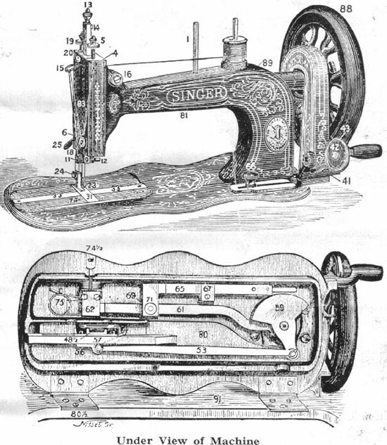
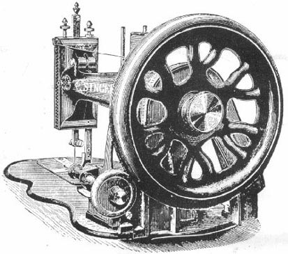

The figures shown in the above illustrations are the numbers of the parts. When ordering parts for this machine the numbers must be followed by "12K", e.g. 48 1/2 /12K.
This device allows the balance wheel to run free, so that bobbins may be wound and the correct method of treadling acquired, without operating the stitching mechanism. To loosen the wheel, hold it with the left hand, and with the right hand pull out the disc sufficiently to allow of its being turned either to the right or left, thus liberating the projection on the inner side of the disc from its recess.

To lock the balance wheel, hold it with the left hand and, with the right, turn the disc until the projection springs back into its recess.
The balance wheel must always turn from the top towards you.
The presser foot must be raised, except when sewing.
Do not work the machine with the shuttle and the needle threaded, except when sewing.
The slides (33) over the shuttle must be closed before starting work on the machine.
Loosen the balance wheel as described above, place both feet upon the treadle and turn the balance wheel over towards you, at the same time allowing the feet to move freely and lightly with the motion of the treadle. Continue to do this until a regular and easy movement is acquired and you are able to work the treadle so that you can re-start the machine without the balance wheel turning in the wrong direction.
When familiar with working movement, lock the balance wheel, and place a piece of material under the presser foot (23). Lower the latter by means of the lifter (25) and again work the machine, without its being threaded, until you are accustomed to guiding the material.
Raise the needle bar (9) to its highest point and loosen the needle clamp nut (12). Hold the needle with the left hand and, with its long groove towards you, place its point down through the hole in the throat plate (31). Turn the wheel (88) slowly towards you, while you guide the the needle under the needle clamp nut (12).
With the left hand insert the point of a fine needle into the eye, resting it on the throat plate (31). Loosen the clamp nut or screw (12), and pressing the fine needle into the eye in a direct line from you, turn the wheel (88) slowly until the line engraved on the needle bar (9) is level with the top of the arm. Then tighten the clamp nut or screw (12)
Place a reel of thread on the spool pin nearest the balance wheel and lead the end of the thread through the guide (4), then down from front to back under and between the tension discs (6), up and from front to back through the hole in the check lever (15), down and through the hole in the needle clamp (11), then from front to back through the eye of the needle, leaving an end of thread three inches long, which should be placed under and to the back of the presser foot.
Withdraw the left slide and turn the balance wheel until the shuttle is in full view, then lift it from the machine and remove the bobbin. Put a reel of thread on the spool pin, place the bobbinin the spooler (41) and secure the end of the thread by placing it between the end of the bobbin and the cup of the spooler. Operate the machine and guide the thread upon the bobbin slowly from one end to the other, always having the thread a trifle higher at the ends than in the centre.
Having removed the bobbin from the spool winder, take it between the thumb and finger of the right hand, being careful that the thread is over the bobbin towards the hand. At the same time take the shuttle in the fingers of the left with its point towards the hand, place one end of the bobbin in the spring centre in the end of the shuttle cavity next to the point, and gently press the other end into its place.
Pass the thread through the bottom long slot, in at the upper slot, and thence over to the tension holes, passing it through the one nearest the blunt end first, then through as many holes as may be necessary to obtain the tension required, always finishing, however, by passing it through the hole nearest the point, either from the inside outward, or from the outside inward (in the latter case pass it out through the slot below) and finally, in every case, under the spring.
Open the left hand shuttle slide (33), place the shuttle in its carrier (57), leaving out about two inches of thread. Close the slide to within an eighth of an inch, draw out about two inches of thread down from the check lever (15) and through the eye of the needle.
Hold the end of thread with the left hand, allowing it to be slack from the hand to the needle, and turn the wheel (88) towards you until the needle moves down and up again to its highest point. Pull the thread you are holding, and the under thread will be brought up with it through the hole in the throat plate.
Close the slide, place both ends of the thread and the material to be sewn, under the presser foot, lower the the presser bar lifter (25) and commence to sew by turning the balance wheel from the top towards you.
After making a few stitches, stop and examine them. Should there be loops projecting or a straight thread upon the lower surface, turn the tension screw (5) on the top of the machine to the right, so as to tighten the tension on the needle thread.
If the thread lies straight upon the upper surface, turn the tension screw to the left to loosen the tension of the needle thread.
The secret of perfect sewing lies in adjusting the tension on the needle thread and that on the shuttle thread so that they are equal.
Raise the needle bar (9) to its highest point, draw about three inches of thread downwards from the check lever (15), and raise the lifter (25). Move the material back and to the left about three inches and cut the threads close to the work so as to leave the ends long enough to recomence sewing.
Before removing the work from the machine, however, seams should be secured by taking a few stitches in the opposite direction, as in hand sewing.
Test the tension of the shuttle thread by drawing it towards the round end of the shuttle. If it draws as tightly as it will bear without breaking, it is right for fabrics of firm texture. Thin, soft fabrics require less tension. To obtain more or less tension, pass the thread through more or less holes. (see page 4, "To Thread the Shuttle".)
The tension of the needle thread is regulated by turning the tension screw (5). To test the tension, draw the thread downward from the check lever (15), turning the screw (5) to the right, until the thread draws as tightly as it will bear without breaking. For thin, soft fabrics less tension is required.
Loosen the screw (66) in the slot in the bed of the machine and move it to the right to lengthen, or to the left to shorten the stitch. When the required length of stitch is obtained tighten the screw.
The shortest possible stitch is obtained by changing the screw into the hole at the end of the stitch regulator (65) and moving it to the left in the slot as far as it will go.
If used constantly, the machine should be oiled daily, while with moderate
use, an occasional oiling is sufficient, a drop of oil being applied at each
of the following places:
the sides of the needle bar (9),
in the four holes on the top of the arm,
the two holes on the side of the arm,
the shuttle carrier slide,
both ends of the pitman (53) and the feed lever (61),
the feed raising cam (62),
the centre joint of the feed lever,
and the slot of the feed guide.
To oil the stand, apply a drop of oil to the treadle bearings, both ends of the wooden pitman and the axle of the band wheel.
After oiling, run the machine rapidly for a few minutes, afterwards wiping off any superfluous oil.
If the machine works hard while in constant use it is certain that some place requiring oil has been overlooked. If it works hard after being out of use for some time, or after using inferior oil, use a little paraffin, run the machine rapidly for a few minutes, wipe clean and then oil with Singer Superior Machine Oil.